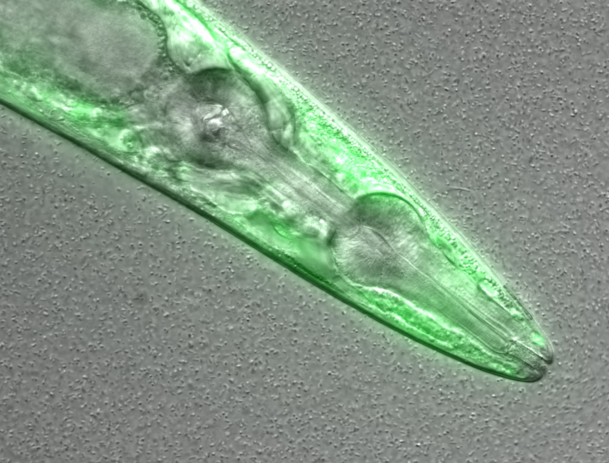
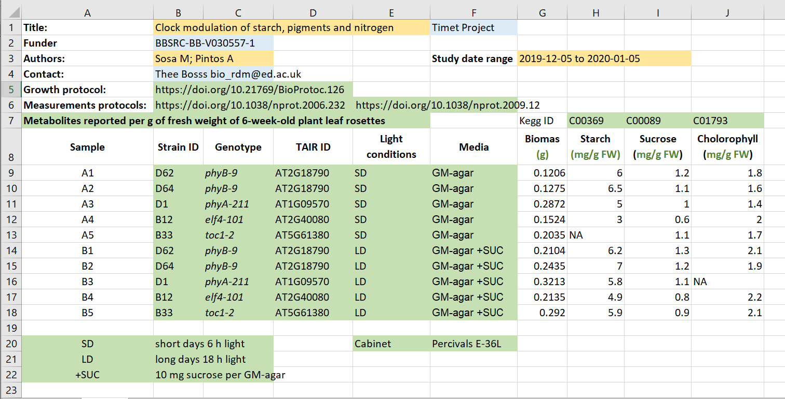

Introduction to metadata
Last updated on 2025-01-28 | Edit this page
Estimated time: 25 minutes
Overview
Questions
- What is metadata?
- What do we use metadata for?
Objectives
- Recognise what metadata is
- Distinguish different types of metadata
- Understand what makes metadata interoperable
- Know how to decide what to include in metadata
(5 min teaching)
What is (or are) metadata?
Simply put, metadata is data about the data. Sound confusing? Lets clarify: metadata is the description of data. It allows deeper understanding of data and provides insight for its interpretation. Hence, your metadata should be considered as important as your data. Further, metadata plays a very important role in making your data FAIR. It should be continuously added to your research data (not just at the beginning or end of a project!). Metadata can be produced in an automated way (e.g. when you capture a microscopy image usually the accompanying software saves metadata as part of it) or manually.
Let’s take a look at an example:This is a confocal microscopy image of a C. elegans nematode
strain used as a proteostasis model (Pretty! Isn’t it?). The image is
part of the raw data associated to Goya et al.,
2020, which was deposited in a Public Omero Server
Project
Figure1
set

Figure credits: María Eugenia Goya. What information can you get from the image, without the associated description (metadata)?
Let’s see the associated metadata of the image and the dataset to which it belongs:
Image metadata
Name: OP50 D10Ad_06.czi Image ID: 3485 Owner: Maria Eugenia Goya ORCID: 0000-0002-5031-2470
Acquisition Date: 2018-12-12 17:53:55 Import Date: 2020-04-30 22:38:59 Dimensions (XY): 1344 x 1024 Pixels Type: uint16 Pixels Size (XYZ) (µm): 0.16 x 0.16 x 1.00 Z-sections/Timepoints: 56 x 1 Channels: TL DIC, TagYFP ROI Count: 0
Tags: time course; day 10; adults; food switching; E. coli OP50; NL5901; C. elegans
Dataset metadata
Name: Figure2_Figure2B Dataset ID: 263 Owner: Maria Eugenia Goya ORCID: 0000-0002-5031-2470
Description: The datasets contains a time course of α-syn aggregation in NL5901 C. elegans worms after a food switch at the L4 stage:
E. coli OP50 to OP50 Day 01 adults Day 03 adults Day 05 adults Day 07 adults Day 10 adults Day 13 adults
E. coli OP50 to B. subtilis PXN21 Day 01 adults Day 03 adults Day 05 adults Day 07 adults Day 10 adults Day 13 adults
Images were taken at 6 developmental timepoints (D1Ad, D3Ad, D5Ad, D7Ad, D10Ad, D13Ad)
* Some images contain more than one nematode.
Each image contains ~30 (or more) Z-sections, 1 µmeters apart. The TagYFP channel is used to follow the alpha-synuclein particles. The TL DIC channel is used to image the whole nematode head.
These images were used to construct Figure 2B of the Cell Reports paper (https://doi.org/10.1016/j.celrep.2019.12.078).
Creation date: 2020-04-30 22:16:39
Tags: protein aggregation; time course; E. coli OP50 to B. subtilis PXN21; food switching; E. coli OP50; 10.1016/j.celrep.2019.12.078; NL5901; C. elegans
This is a lot of information!
Types of metadata
According to How to FAIR we can distinguish between three main types of metadata:
- Administrative metadata: data about a project or resource that are relevant for managing it; E.g. project/resource owner, principal investigator, project collaborators, funder, project period, etc. They are usually assigned to the data, before you collect or create them.
- Descriptive or citation metadata: data about a dataset or resource that allow people to discover and identify it; E.g. authors, title, abstract, keywords, persistent identifier, related publications, etc.
- Structural metadata: data about how a dataset or resource came about, but also how it is internally structured. E.g. the unit of analysis, collection method, sampling procedure, sample size, categories, variables, etc. Structural metadata have to be gathered by the researchers according to best practice in their research community and will be published together with the data.
Descriptive and structural metadata should be added continuously throughout the project.
Exercise 1: Identifying metadata types (4 min)
Here we have an excel spreadsheet that contains project metadata for
a made-up experiment of plant metabolites  Figure credits: Tomasz
Zielinski and Andrés Romanowski
Figure credits: Tomasz
Zielinski and Andrés Romanowski
In groups, identify different types of metadata (administrative, descriptive, structural) present in this example.
- Administrative metadata marked in blue
- Descriptive metadata marked in orange
- Structural metadata marked in green

Figure credits: Tomasz Zielinski and Andrés Romanowski
(6 min teaching)
Where does data end and metadata start?
What is “data” and what is “metadata” can be a matter of perspective: Some researchers’ metadata can be other researchers’ data.
For example, a funding body is categorised as typical administrative metadata, however, it can be used to calculate numbers of public datasets per funder and then used to compare effects of different funders’ policies on open practices.
Adding metadata to your experiments
Good metadata are crucial for assuring re-usability of your outcomes. Adding metadata is also a very time-consuming process if done manually, so collecting metadata should be done incrementally during your experiment.
As we saw metadata can take many forms from as simple as including a ReadMe.txt file, by embedding them inside the Excel files, to using domain specific metadata standards and formats.
But,
- What should be included in metadata?
- What terms should be used in descriptions?
For many assay methods and experiment types, there are defined recommendations and guidelines called Minimal Information Standards.
Minimal Information Standard
The minimum information standard is a set of guidelines for reporting data derived by relevant methods in biosciences. If followed, it ensures that the data can be easily verified, analysed and clearly interpreted by the wider scientific community. Keeping with these recommendations also facilitates the foundation of structuralized databases, public repositories and development of data analysis tools. Individual minimum information standards are brought by the communities of cross-disciplinary specialists focused on issues of the specific method used in experimental biology.
Minimum Information for Biological and Biomedical Investigations (MIBBI) is the collection of the most known standards.
FAIRSharing offers excellent search service for finding standards
Exercise 2: Minimal information standard example (5 min)
Look at Minimum Information about a Neuroscience
Investigation (MINI) Electrophysiology Gibson, F.
et al. Nat Prec (2008). which contains recommendations for reporting
the use of electrophysiology in a neuroscience study.
(Neuroscience (or neurobiology) is the scientific study of the
nervous system).
Scroll to Reporting requirement and decide which of the points 1-8 are:
- important for understanding and reuse of data
- important for technical replication
- could be applied to other experiments in neuroscience
Possible answers:
- 2, 3, 4, 5, 6, 8a-b
- 3, 7
- 2, 3, 4, 5, 6
What if there are no metadata standards defined for your data / field of research?
Think about the minimum information that someone else (from your lab or from any other lab in the world) would need to know to be able to work with your dataset without any further input from you.
Think as a consumer of your data not the producer!
Exercise 3: What to include - discussion (4 minutes)
Think of the data you generate in your projects, and imagine you are going to share them.
What information would another researcher need to understand or reproduce your data (the structural metadata)?
For example, we believe that any dataset should have:
- a name/title
- its purpose or experimental hypothesis
Write down and compare your proposals, can we find some common elements?
Some typical elements are:
- biological material, e.g. Species, Genotypes, Tissue type, Age, Health conditions
- biological context, e.g. speciment growth, entrainment, samples preparation
- experimental factors and conditions, e.g. drug treatments, stress factors
- primers, plasmid sequences, cell line information, plasmid construction
- specifics of data acquisition
- specifics of data processing and analysis
- definition of variables
- accompanying code, software used (version nr), parameters applied, statistical tests used, seed for randomisation
- LOT numbers
Metadata and FAIR guidelines
Metadata provides extremely valuable information for us and others to be able to interpret, process, reuse and reproduce the research data it accompanies.
Because metadata are data about data, all of the FAIR principles i.e. Findable, Accessible, Interoperable and Reusable apply to metadata.
Ideally, metadata should not only be machine-readable, but also interoperable so that they can interlink or be reasoned about by computer systems.
Attribution
Content of this episode was adapted from:
- Metadata provides contextual information so that other people can understand the data.
- Metadata is key for data reuse and complying with FAIR guidelines.
- Metadata should be added incrementally through out the project